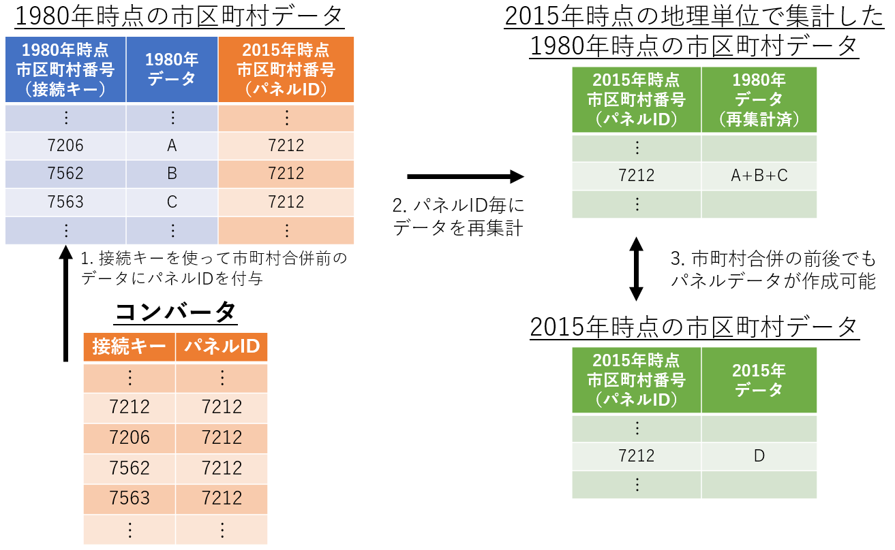

This paper explains a method of constructing municipality-level panel data for Japan for the period of 1980–2020. Municipal mergers conducted around 2005, which are collectively known as "the Great Mergers in the Heisei era," resulted in a reduction of almost half of the number of Japanese municipalities. The significant changes in shapes of municipalities resulting from these municipal merges cause difficulties in constructing municipality-level panel data. To address this problem, this paper proposes a method of aggregating municipal districts from the past with geographical units that remain identical throughout the whole period.
| # | Items | Download (English) | Download (Japanese) |
|---|---|---|---|
| Terms of Use | |||
| Manual | |||
| Online Appendix | |||
| Converter File (Data) | CSV (utf-8) | CSV (utf-8) | |
| Converter File (Data) | Excel XLSX | Excel XLSX | |
| Converter File (Data) | Stata (ver 14 or later) | Stata (ver 14 or later) | |
| Converter File (Print version) | |||
| Demo File (Stata) | GitHub | ||
| Demo File (R) | GitHub |
Please carefully read the Terms of Use before you use the data on this web site.